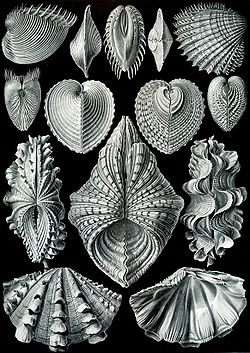

Lastúrniky (iné názvy: zriedkavo korytníky, zastarano lasturniky, lastúrnici, lastúrovci, lastury, mlže, mlži, mušle; lat. Bivalvia, Lamellibranchia) sú trieda schránkovcov. Ich telo je ukryté v dvojchlopňovej schránke zloženej z lastúr, ktoré sú spojené pružným väzom, a väčšinou aj systémom zubov (cardo) na protiľahlom póle. Sú bilaterálne symetrické, u niektorých trvalo prisadnutých je symetria narušená (spodná lastúra je menšia, plochá). Tráviaca sústava začína ústnym otvorom, nasleduje hltan, žalúdok s bielkovinovým kryštálom v slepom vaku, črevo a anus. Črevo tesne pred konečníkom obyčajne prechádza srdcovou komorou. Obehová sústava je jednoduchá: Srdce má 2 predsiene, do ktorých žiabrové artérie privádzajú okysličenú hemolymfu. Srdce ju vypudzuje hlavovou aortou dopredu, kde sa rozlieva v systéme lakún. Odkysličená hemolymfa sa zbiera v zberných vénach, ktoré ju vedú opäť do žiabier. Vylučovaciu sústavu tvorí pár kardiálnych metanefrídií (Bojanových orgánov), ktorých nefrostómy odvádzajú metabolity z dutiny perikardu.
.jpg)